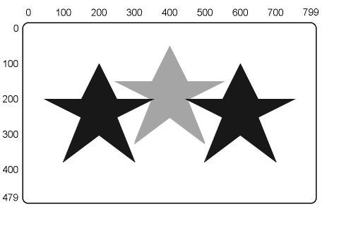

| Chapter 8 | Contents | Chapter 10 |
| Chapter 8 | Contents | Chapter 10 |
Macrographs let you define and store commands used to draw graphics. For example, you can store a logo as a series of commands in a macrograph, then use the logo in different displays. You do not have to rebuild the logo each time you need it. Macrographs are similar to procedures used in higher level languages such as Pascal.
A macrograph can include ReGIS commands and character strings. The VT300 can store up to 26 macrographs. Each macrograph is identified by a letter of the alphabet. The identifying letter is not case sensitive. (For example, 'a' and 'A' would identify the same macrograph.)
You can nest macrographs. That is, you can use one macrograph as part of another macrograph. You can nest macrographs up to 16 levels deep. However, a macrograph cannot call itself.
The VT300 can store at least 10,000 bytes of macrograph data. Macrograph data is stored dynamically. When you redefine or delete a macrograph, the terminal clears the old data.
The VT300 does not draw macrographs when you define them. You must select a defined macrograph to draw it. Selecting an empty macrograph does not cause an error. The macrograph saves all characters it contains, including the four control characters BS, HT, CR, and LF.
You can define macrographs at almost any point in a ReGIS stream, with the following exceptions.
As part of a quoted string
ReGIS does not recognize any commands in a quoted text string. If
you try to define a macrograph in a text string, ReGIS interprets
the command as text to display on the screen.
In another macrograph
You must define macrographs separately. You cannot define a
macrograph while inside another macrograph. You cannot nest
macrograph definitions.
There are three types of macrograph command operations.
PROGRAMMING TIP: Macrographs can store parts of commands that you use frequently in a program. For example, you can store the parameters for several color maps in a macrograph.
You use this option to define a macrograph and assign it a letter. You use the following format for the define macrograph operation.
@:<call letter><definition>@;
where
@ identifies the beginning of a macrograph definition.
: identifies a define macrograph operation.
<call letter> is a letter of the alphabet used to identify the macrograph you are defining. The call letter is case insensitive. For example, 'a' and 'A' identify the same macrograph.
<definition> is the macrograph's definition.
@; identifies the end of the definition.
Figure 9-1 shows an example of how to define, store, and invoke the macrograph for a shaded star.
|  | ||
|
This option lets you select a macrograph that you already defined. For example, if you stored a graphic image with a macrograph, you can display the image with this option. ReGIS inserts the contents of the macrograph into the command stream. You use the following format for the invoke macrograph option.
@<call letter>
where
<call letter> is the letter of the alphabet that identifies the macrograph you want to use. The letter is not case sensitive. For example, 'a' and 'A' identify the same macrograph.
When you select a macrograph, ReGIS uses the current values for commands such as write, screen, and text commands. You can select new values in the definition for a macrograph, by using the ReGIS commands and temporary options.
There are two options for clearing macrograph definitions.
| Clear all macrographs | Clears the definitions in all 26 macrograph locations. |
| Clear specified macrograph | Clears the macrograph that you identify by letter. |
You use the following formats for the clear macrograph options.
| Clear All Macrographs | Clear Specified Macrograph |
|---|---|
| @. | @:<call letter>@; |
where
@. is the command for clearing all 26 macrographs.
@: identifies a define macrograph operation.
<call letter> specifies the macrograph you want to clear.
@; clears the selected macrographs by specifying a blank definition.
Table 9-1 is a summary of the macrograph options. There are no default values for these commands.
| Option | Description |
|---|---|
| @<call letter> | Invoke macrograph |
| @:<call letter> <definition>@; | Define macrograph |
| @. | Clear all macrographs |
| @:<call letter>@; | Clear defined macrograph |